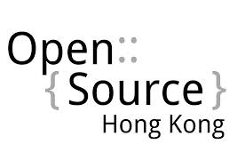
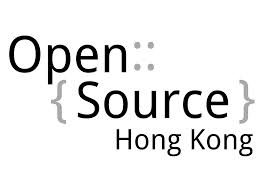

Get connected with the greatest minds in the industry with the latest Internet development, news, various development platform techniques, hints and tips. Prominent speakers around the world are coming all together with motivating and inspirational talks and workshops. Hundreds of developers will gather at the summit to meet, learn and exchange experiences and ideas on different development platform / environment.
The event will be divided to two tracks: main track conference and parallel track workshops and seminar. While main track conference will consist of international tech companies presenting state of the art technologies and expereince sharing, parallel track seminars and workshops will provide a two way communication platform for local developers to obatin hands-on experience in small groups.
World Internet Developer Summit 2014
Date: 27-28 Mar 2014
Venue: 27 Mar at Cyberport, 28 Mar at Hong Kong Science Park
Keynote Speakers (More to come!)


David Cramer
Software Engineer, Dropbox

Maxime Belanger
Software Engineer, Dropbox


Josh Aberant
Twitter Postmaster
Speakers (More to come!)


Asya Kamsky
Principle Solutions Architect, MongoDB


Jeremy Yuan
APAC Market Development, Evernote


Chia-liang Kao
g0v.tw 台灣零時政府
Keynote: Replication in MongoDB

MongoDB
Asya Kamsky
Principal Solutions Architect, MongoDB
Asya has been in high tech for over 20 years, most of them working at
start-ups. She has worked with multiple RDBMSs and backend code in
E-commerce, networking, security and data-warehousing as well as
spending seven years at Coverity, a development testing company. Two
years ago she tried MongoDB, fell in love with it and now she works
for MongoDB Inc as a Principal Solutions Architect.
Keynote: Growth hacking with Messaging in Modern Applications
Twitter
Josh Aberant
Twitter Postmaster
Josh serves as Postmaster at Twitter where his work is focused on scaling email notifications and messaging services to improve user engagement while optimizing relevance and deliverability. Email is a key channel within the Twitter platform and is how hundreds of millions of users stay connected with their @mentions, retweets and favorites. Josh also manages relationships with ISPs and inbox providers that receive Twitter messages. Josh joined the flock when Twitter acquired the RestEngine team, a startup he co-founded and boostrapped to profitability. RestEngine created and launched a social outbound marketing automation platform for Facebook apps. Prior to RestEngine, Josh led building of the outbound deliverability systems for marketing automation company Marketo, which recently went IPO.
Keynote: Scaling Dropbox Engineering through Automations
Dropbox
David Cramer
Software Engineer, Dropbox
Keynote: Hacking the Dropbox Desktop for Fun and Profit
Dropbox
Maxime Belanger
Software Engineer at Dropbox
Keynote: Running Node.JS on Azure
Microsoft

Prakash Sundaresan
Chief Technology Officer,Microsoft Asia-Pacific Research and Development Group
As Chief Technology Officer for Microsoft Asia-Pacific Research and Development Group (ARD), Prakash Sundaresan assists Dr. Ya-Qin Zhang, ARD Chairman, chart ARD’s strategy and agenda for both the global and China markets; as well as facilitate ARD’s transformation into a key global research, innovation and product development base for Microsoft.
Prior to this position, Sundaresan served as General Manager of Server & Tools Business (STB) China since 2009. Under his leadership, STB China set up the China Cloud Innovation Center (CCIC) in 2010, specifically to help the government, partners and customers in China be successful with their adoption of Microsoft’s cloud technologies.
Since joining Microsoft in 1998, Sundaresan has held various leadership positions in the SQL Server division, including as Director of Strategy. In 2007, he moved to China to establish the SQL Server China R&D Center within ARD.
Before joining Microsoft, Sundaresan worked at Informix Software and Digital Equipment Corp.
Sundaresan holds an MBA from the University of Washington, Seattle, a Master’s in Computer Science from the University of Wisconsin, Madison and a Bachelor of Technology in Computer Science from the Indian Institute of Technology, New Delhi.
Presentation: g0v.tw: Open source, Open Data, and Open Government
g0v.tw
Chia-liang Kao
Co-founder, g0v.tw 台灣零時政府
clkao (高嘉良) - 喜歡寫程式、泡 ♨。參加 1997
年國際資訊奧林匹亞後，進入台大資訊系就讀，即活躍於國內外開放源碼社群，隨後旅居英國倫敦從事軟體開發及顧問工作。他是以 Subversion
為基底的版本控制系統 SVK 之創始者。2012 年發起 g0v.tw 計畫。g0v.tw
是一個線上社群，致力於推動資訊透明化，與增進群眾參與。
clkao (Chia-liang Kao) has been an active open source software
developer since 2000. He is best known for creating SVK, a
distributed version control system based on Subversion. He co-founded
the g0v.tw initiative in 2012. g0v.tw is an online community that
advocates information transparency, focusing on developing tools for
improving citizen participation.
Sponsorship Opportunity
Connect with your target audience by sponsoring the World Internet Developers Summit.
Sponsors can choose from many levels of sponsorship options. For more information,
please contact us at sec@isoc.hk.
Date: 27 – 28 March, 2014 (Thu – Fri)
Venue:
27 March — Cyberport (Ocean View Court, The Arcade, Cyberport 3, 100 Cyberport Road, Hong Kong) (map)
28 March — Hong Kong Science Park (Charles K Kao Auditorium, Phase 2, Hong Kong Science Park, Shatin, Hong Kong) (map)
| 27 March |
Cyberport |
| Ocean View Concourse - The Arcade |
Function Room 1 |
Function Room 2 |
Function Room 3 |
Training Threatre |
| 09:30 – 10:00 |
Registration & Networking
|
| 10:00 – 10:10 |
Welcome and Greetings
|
| 10:10 – 10:20 |
Why World Internet Developer Summit?
Ben Cheng, Convener, Internet Developer Working Group, Internet Society Hong Kong
|
| 10:20 – 11:10 |
David Cramer, Software Engineer, Dropbox
Keynote: Scaling Dropbox Engineering through Automations
|
| 11:10 – 12:00 |
Asya Kamsky, Principal Solutions Architect, MongoDB
Keynote: Replication in MongoDB
|
| 12:00 – 12:50 |
Prakash Sundaresan,Chief Technology Officer,Microsoft Asia-Pacific Research and Development Group
Keynote: Running Node.JS on Azure
|
| 12:50 – 14:00 |
Lunch and Network Hours |
| 14:00 – 14:50 |
Josh Aberant, Postmaster, Twitter
Keynote: Growth hacking with Messaging in Modern Applications
|
| 14:50 – 15:25 |
Panel Discussion |
| 15:25 – 15:40 |
Tea Break |
| 15:40 – 16:15 |
g0v.tw: Open source, Open Data, and Open Government
clkao (Chia-liang Kao) , Co-founder of g0v.tw
|
|
Entrepreneurial Workshop
Josh Aberant, Postmaster, Twitter
|
Unleash the power of Azure with Linux OS and Media Service (Workshop)
Danny Mak, Microsoft
|
Bring Maps into your Apps (Workshop)
Homing Tam
|
| 16:15 – 16:50 |
Firefox OS
Mozilla
|
MongoDB Sharding Workshop
Ms Asya Kamsky, Principal Solutions Architect, MongoDB
|
|
Use Scrapy on Web Scraping (Workshop)
Sammy Fung
|
| 16:50 – 17:20 |
HKUPOP Evoting
Jazz Ma
|
| 17:20 – |
Lucky Draw |
| 28 March |
Hong Kong Science Park |
| CKK Auditorium |
Conference Hall 04 – 05 |
Conference Hall 06 – 07 |
Conference Hall 01 – 02 |
Conference Hall 03 |
| 09:30 – 10:00 |
Registration & Networking
|
| 10:00 – 10:10 |
Welcome and Greetings
|
| 10:10 – 10:55 |
Maxime Belanger, Software Engineer at Dropbox
Keynote: Hacking the Dropbox Desktop for Fun and Profit
|
| 10:55 – 11:30 |
Developing for the World, Global by Default: Evernote's International Strategy
Jeremy Yuan, APAC Market Development, Evernote
|
Building Gaming PaaS on Drupal
Keith Yau
|
BackboneJS (TBC)
Jimmy
|
|
| 11:30 – 11:45 |
Break |
| 11:45 – 12:20 |
Infrastructure as Code in action
Markku, APAC Technology Evangelist, Amazon Web Services Asia Pacific
|
iPhone app Prototyping with Xcode and using Storyboard
James Tang
|
| 12:20 – 13:45 |
Lunch and Network Hours |
| 13:45 – 14:15 |
UX Lessons Learned From an App Usability Test
Ada Wong
|
|
Through The Looking Glass - Reinventing the window to the interwebs
Elliott Polk
|
Hands on CSRF & XSS Exploitation
Matthew Urquhart
|
| 14:15 – 14:45 |
| 14:45 – 15:15 |
AngularJS
|
Build your own Twitter with Cassandra
Matthew Rudy Jacobs
|
| 15:15 – 15:45 |
Intro to Django
Kevin Campbell
|
| 15:45 – 16:15 |
Kick-start a Mobile App with Web Technologies
Bart Verkoeijen
|
Building Web Applications with Ember.js
Matthew Lehner
|
| 16:15 – 16:45 |
| 16:45 – 17:15 |
Highly Scalable Server Design - Building Next-Gen Service Platform
Calvin lee
|
Highly Scalable Server Design - Building Next-Gen Service Platform
Calvin Lee
|
| 17:15 – 17:45 |
|
NOTE: The above agenda is subject to change and without prior notice.
NOTE: Extra ticket is required for these workshops.


 
